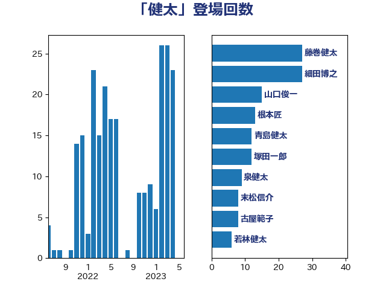

単語「健太」

| 細田博之 | 自由民主党 | 20 回 |
| 薗浦健太郎 | 自由民主党 | 18 回 |
| 金田勝年 | 自由民主党 | 18 回 |
| 藤巻健太 | 日本維新の会 | 14 回 |
| 根本匠 | 自由民主党 | 11 回 |
| 山口俊一 | 自由民主党 | 10 回 |
| 泉健太 | 立憲民主党 | 10 回 |
| 古屋範子 | 公明党 | 8 回 |
| 田村智子 | 日本共産党 | 5 回 |
| 木原誠二 | 自由民主党 | 4 回 |
| 小里泰弘 | 自由民主党 | 3 回 |
| 若林健太 | 自由民主党 | 3 回 |
| 高木毅 | 自由民主党 | 3 回 |
| 伊東良孝 | 自由民主党 | 2 回 |
| 原口一博 | 立憲民主党 | 2 回 |
| 岸田文雄 | 自由民主党 | 2 回 |
| 橋本岳 | 自由民主党 | 2 回 |
| 海江田万里 | 立憲民主党 | 2 回 |
| 細田健一 | 自由民主党 | 2 回 |
| 葉梨康弘 | 自由民主党 | 2 回 |
| 越智隆雄 | 自由民主党 | 2 回 |
| 道下大樹 | 立憲民主党 | 2 回 |
| 馬淵澄夫 | 立憲民主党 | 2 回 |
| 高鳥修一 | 自由民主党 | 2 回 |
| 上野賢一郎 | 自由民主党 | 1 回 |
| 中根一幸 | 自由民主党 | 1 回 |
| 堤かなめ | 立憲民主党 | 1 回 |
| 宮本徹 | 日本共産党 | 1 回 |
| 平口洋 | 自由民主党 | 1 回 |
| 後藤祐一 | 立憲民主党 | 1 回 |
| 森屋宏 | 自由民主党 | 1 回 |
| 矢倉克夫 | 公明党 | 1 回 |
| 義家弘介 | 自由民主党 | 1 回 |
| 舟山康江 | 国民民主党 | 1 回 |
| 菅義偉 | 自由民主党 | 1 回 |
| 赤澤亮正 | 自由民主党 | 1 回 |
| 赤羽一嘉 | 公明党 | 1 回 |
| 足立康史 | 日本維新の会 | 1 回 |
| 重徳和彦 | 立憲民主党 | 1 回 |
| 関芳弘 | 自由民主党 | 1 回 |
| 馬場伸幸 | 日本維新の会 | 1 回 |